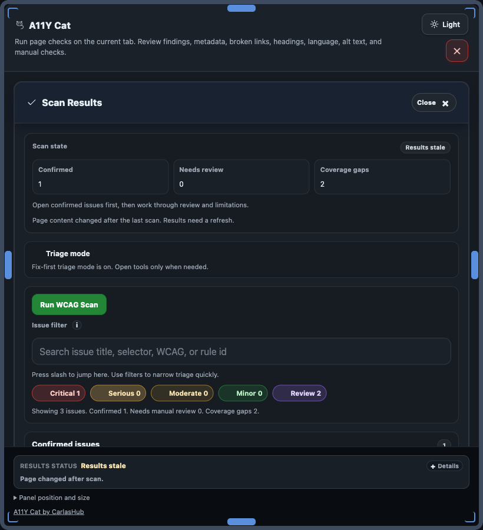

How to interpret scan output
A11Y Cat separates confirmed findings from review items, advisory notes, and scan limitations so teams can triage accurately without overstating certainty.

Confirmed Issues
Confirmed Issues are deterministic findings in the tested page state, typically from axe violations and deterministic custom checks.
Manual / Incomplete / Review Items
Manual / Incomplete / Review Items are not confirmed failures and require human judgement before filing as defects.
Advisory Notes
Advisory Notes are quality signals and guidance; they are not automatic WCAG failures.
Scan Limitations
Scan Limitations report coverage gaps, restricted contexts, and runtime boundaries that can reduce what the scan could inspect.
Severity levels
Severity labels prioritize confirmed findings for remediation and should be read alongside source and confidence labels.
- Critical: highest impact barriers with direct user-blocking risk; mapped from axe impact
criticalor equivalent deterministic severity. - Serious: high-impact accessibility barriers with broad user impact; mapped from axe impact
serious. - Moderate: medium-impact barriers that still require correction; mapped from axe impact
moderate. - Minor: lower-impact barriers suitable for cleanup planning; mapped from axe impact
minor. - Review: incomplete or uncertain outputs that require manual confirmation before defect filing.
WCAG mapping comes from rule metadata when available. Severity indicates triage order, not legal compliance status.
Source Engines
Source engines identify whether output came from axe-core, custom A11Y Cat logic, diagnostics, or local workflow state.
Result classification matrix
Use this model before filing defects or reporting compliance status.
| Category | Source | Confirmed failure? | User action |
|---|---|---|---|
| Confirmed Confirmed findings | axe violations and deterministic custom checks | Yes, in tested page state | Fix by severity, retest, compare with previous scan |
| Review Manual/review items | axe incomplete, visual/context/state-limited checks | No | Inspect manually before defect classification |
| Advisory Advisory notes | quality guidance modules | No | Treat as improvement guidance |
| Limitation Limitations | diagnostics/runtime boundaries | No | Run additional manual coverage where inspection was limited |
WCAG and axe-core scope: this build uses bundled axe-core rules for WCAG 2.0/2.1/2.2. A11Y Cat triage guidance focuses on A/AA workflows while preserving rule metadata where provided.
Result flow diagram
This flow shows how raw findings become user-facing categories.
- Text equivalent: deterministic findings are separated from uncertain and limitation-driven findings.
- No branch implies full compliance; each branch has different follow-up expectations.
Next step
For feature-by-feature details, open the full UI feature guide.